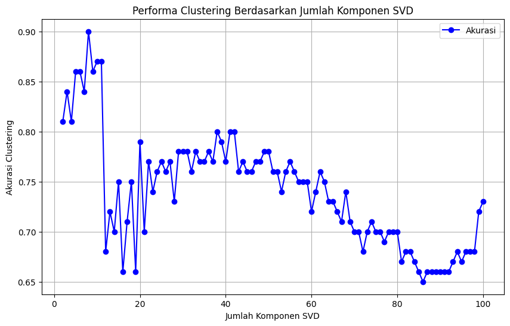
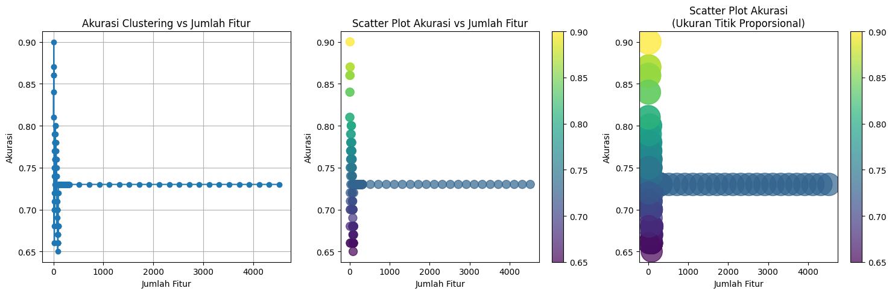
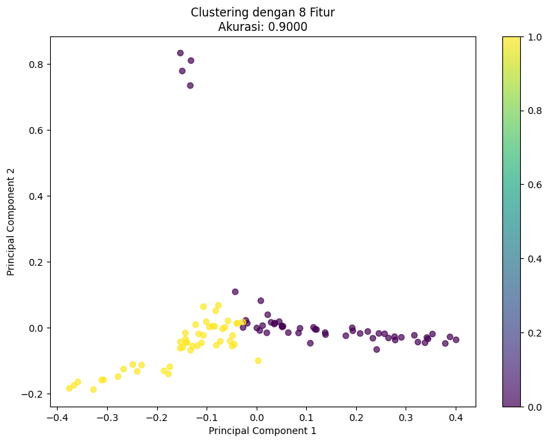

Tugas 6#
Clustering Web dengan Fuzzy C-Means|#
Rafly Faldiansyah Putra
21041100063
import pandas as pd
from sklearn.feature_extraction.text import TfidfVectorizer
from sklearn.decomposition import TruncatedSVD
from sklearn.metrics.pairwise import cosine_similarity
import re
import numpy as np
from IPython.display import display, Markdown
import skfuzzy as fuzz
from sklearn.metrics import accuracy_score
from sklearn.preprocessing import LabelEncoder
from IPython.display import display, Markdown
# 1. Membaca Dataset
# Membaca file CSV yang berisi dataset
df = pd.read_csv("preprocessing-kompas.csv")
# Mengganti nilai NaN dengan string kosong agar tidak ada data kosong yang menyebabkan error
# df['stopword_removal'] = df['stopword_removal'].fillna('')
# 2. Mengonversi Data Teks ke TF-IDF
# Menginisialisasi TfidfVectorizer dengan normalisasi L2
vectorizer = TfidfVectorizer(norm='l2')
# Menghitung nilai TF-IDF untuk setiap dokumen
tfidf_matrix = vectorizer.fit_transform(df['stopword_removal'])
# Mengubah hasil TF-IDF menjadi DataFrame untuk kemudahan akses
tfidf_df = pd.DataFrame(tfidf_matrix.toarray(), columns=vectorizer.get_feature_names_out())
# 3. Reduksi Dimensi dengan Truncated SVD
# Menginisialisasi TruncatedSVD untuk mereduksi dimensi menjadi 100 komponen (atau sesuai kebutuhan)
svd = TruncatedSVD(n_components=100, random_state=42)
# Mengaplikasikan SVD pada matriks TF-IDF untuk menghasilkan matriks dengan dimensi yang lebih rendah
svd_matrix = svd.fit_transform(tfidf_matrix)
# Menyimpan hasil SVD dalam DataFrame untuk digunakan dalam perhitungan kemiripan
svd_df = pd.DataFrame(svd_matrix)
# Menampilkan 10 baris pertama dari DataFrame hasil SVD
svd_df.head(1000)
---------------------------------------------------------------------------
ModuleNotFoundError Traceback (most recent call last)
<ipython-input-1-a3a4135cd8a6> in <cell line: 8>()
6 import numpy as np
7 from IPython.display import display, Markdown
----> 8 import skfuzzy as fuzz
9 from sklearn.metrics import accuracy_score
10 from sklearn.preprocessing import LabelEncoder
ModuleNotFoundError: No module named 'skfuzzy'
---------------------------------------------------------------------------
NOTE: If your import is failing due to a missing package, you can
manually install dependencies using either !pip or !apt.
To view examples of installing some common dependencies, click the
"Open Examples" button below.
---------------------------------------------------------------------------
tfidf_df.head(1000)
| abcnetau | abdi | abdul | abi | academy | acara | acaraacara | ace | aceh | acep | ... | zac | zaenuddin | zakiyuddin | zaman | zamannya | zamrud | zat | zulhas | zulkieflimansyahsuhaili | zulkifli | |
|---|---|---|---|---|---|---|---|---|---|---|---|---|---|---|---|---|---|---|---|---|---|
| 0 | 0.0 | 0.0 | 0.000000 | 0.0 | 0.000000 | 0.0 | 0.0 | 0.0 | 0.0 | 0.0 | ... | 0.0 | 0.0 | 0.000000 | 0.0 | 0.0 | 0.0 | 0.0 | 0.0 | 0.0 | 0.0 |
| 1 | 0.0 | 0.0 | 0.000000 | 0.0 | 0.000000 | 0.0 | 0.0 | 0.0 | 0.0 | 0.0 | ... | 0.0 | 0.0 | 0.000000 | 0.0 | 0.0 | 0.0 | 0.0 | 0.0 | 0.0 | 0.0 |
| 2 | 0.0 | 0.0 | 0.000000 | 0.0 | 0.000000 | 0.0 | 0.0 | 0.0 | 0.0 | 0.0 | ... | 0.0 | 0.0 | 0.000000 | 0.0 | 0.0 | 0.0 | 0.0 | 0.0 | 0.0 | 0.0 |
| 3 | 0.0 | 0.0 | 0.058451 | 0.0 | 0.000000 | 0.0 | 0.0 | 0.0 | 0.0 | 0.0 | ... | 0.0 | 0.0 | 0.068032 | 0.0 | 0.0 | 0.0 | 0.0 | 0.0 | 0.0 | 0.0 |
| 4 | 0.0 | 0.0 | 0.000000 | 0.0 | 0.000000 | 0.0 | 0.0 | 0.0 | 0.0 | 0.0 | ... | 0.0 | 0.0 | 0.000000 | 0.0 | 0.0 | 0.0 | 0.0 | 0.0 | 0.0 | 0.0 |
| ... | ... | ... | ... | ... | ... | ... | ... | ... | ... | ... | ... | ... | ... | ... | ... | ... | ... | ... | ... | ... | ... |
| 95 | 0.0 | 0.0 | 0.000000 | 0.0 | 0.000000 | 0.0 | 0.0 | 0.0 | 0.0 | 0.0 | ... | 0.0 | 0.0 | 0.000000 | 0.0 | 0.0 | 0.0 | 0.0 | 0.0 | 0.0 | 0.0 |
| 96 | 0.0 | 0.0 | 0.000000 | 0.0 | 0.063166 | 0.0 | 0.0 | 0.0 | 0.0 | 0.0 | ... | 0.0 | 0.0 | 0.000000 | 0.0 | 0.0 | 0.0 | 0.0 | 0.0 | 0.0 | 0.0 |
| 97 | 0.0 | 0.0 | 0.000000 | 0.0 | 0.000000 | 0.0 | 0.0 | 0.0 | 0.0 | 0.0 | ... | 0.0 | 0.0 | 0.000000 | 0.0 | 0.0 | 0.0 | 0.0 | 0.0 | 0.0 | 0.0 |
| 98 | 0.0 | 0.0 | 0.000000 | 0.0 | 0.000000 | 0.0 | 0.0 | 0.0 | 0.0 | 0.0 | ... | 0.0 | 0.0 | 0.000000 | 0.0 | 0.0 | 0.0 | 0.0 | 0.0 | 0.0 | 0.0 |
| 99 | 0.0 | 0.0 | 0.000000 | 0.0 | 0.000000 | 0.0 | 0.0 | 0.0 | 0.0 | 0.0 | ... | 0.0 | 0.0 | 0.000000 | 0.0 | 0.0 | 0.0 | 0.0 | 0.0 | 0.0 | 0.0 |
100 rows × 4917 columns
import numpy as np
import skfuzzy as fuzz
from sklearn.metrics import accuracy_score
# 4. Menghapus Label Kategori dari Data untuk Clustering
# Misalkan kolom 'kategori' berisi label kategori asli, kita drop kolom tersebut untuk proses clustering
data_features = svd_df.drop(columns=['kategori'], errors='ignore') # Buat pastikan kolom kategori memang ada
# 5. Proses Fuzzy C-Means Clustering
# Menentukan jumlah kluster (misalnya 2 kluster)
n_clusters = 2
# Menjalankan Fuzzy C-Means
cntr, u, u0, d, jm, p, fpc = fuzz.cluster.cmeans(
data_features.T, n_clusters, m=2, error=0.05, maxiter=1000, init=None, seed=42
)
# Menentukan kluster akhir untuk setiap data berdasarkan derajat keanggotaan tertinggi
cluster_labels = np.argmax(u, axis=0)
# 6. Mengukur Akurasi Clustering
# Misalkan kolom 'kategori' menyimpan label asli
if 'kategori' in df.columns:
# Mengonversi label kategori ke bentuk numerik jika belum
df['kategori_numerik'] = pd.factorize(df['kategori'])[0]
# Menghitung akurasi dengan membandingkan hasil clustering dengan label asli
akurasi = accuracy_score(df['kategori_numerik'], cluster_labels)
print(f"Akurasi Clustering Fuzzy C-Means: {akurasi:.2f}")
else:
print("Kolom 'kategori' tidak ditemukan pada dataset; akurasi tidak dapat dihitung.")
Akurasi Clustering Fuzzy C-Means: 0.73
import matplotlib.pyplot as plt
from sklearn.decomposition import PCA
# 7. Menambahkan Kolom Kluster ke DataFrame
# Menyimpan hasil kluster di dalam DataFrame asli untuk memudahkan tampilan
df['cluster'] = cluster_labels
# Menampilkan beberapa dokumen beserta kluster mereka
display(df[['stopword_removal', 'kategori', 'cluster']].head(100))
# 8. Visualisasi Kluster
# Menggunakan PCA untuk mereduksi data ke dalam 2 dimensi agar bisa divisualisasikan
pca = PCA(n_components=2)
pca_result = pca.fit_transform(data_features)
# Mengonversi hasil PCA ke DataFrame untuk kemudahan visualisasi
pca_df = pd.DataFrame(pca_result, columns=['PC1', 'PC2'])
pca_df['cluster'] = cluster_labels
# Plot hasil klustering
plt.figure(figsize=(10, 7))
colors = ['red', 'blue'] # Sesuaikan warna untuk setiap kluster
for cluster in range(n_clusters):
subset = pca_df[pca_df['cluster'] == cluster]
plt.scatter(subset['PC1'], subset['PC2'], s=50, color=colors[cluster], label=f'Cluster {cluster + 1}')
# Menambahkan keterangan dan judul grafik
plt.title("Visualisasi Hasil Clustering Fuzzy C-Means")
plt.xlabel("Principal Component 1")
plt.ylabel("Principal Component 2")
plt.legend()
plt.show()
| stopword_removal | kategori | cluster | |
|---|---|---|---|
| 0 | jakarta kompascom aktris soraya larasati konsi... | Olahraga | 0 |
| 1 | jakarta kompascom olahraga gaya hidup masyarak... | Olahraga | 0 |
| 2 | jakarta kompascom olahraga kerap kali sulit or... | Olahraga | 0 |
| 3 | medan kompascom pasangan calon paslon wali kot... | Olahraga | 1 |
| 4 | jakarta kompascom aktris model soraya larasati... | Olahraga | 0 |
| ... | ... | ... | ... |
| 95 | kemenangan dikenang rakyat amerika kendali neg... | Politik | 1 |
| 96 | kupang kompascom serena cosgrova francis akrab... | Politik | 1 |
| 97 | kompascom pasangan calon gubernur cagub calon ... | Politik | 1 |
| 98 | ketegasan kerap melekat sosok presiden prabowo... | Politik | 1 |
| 99 | new york city kompascom robert f kennedy jr ma... | Politik | 0 |
100 rows × 3 columns

import pandas as pd
from sklearn.feature_extraction.text import TfidfVectorizer
from sklearn.decomposition import TruncatedSVD
from sklearn.metrics.pairwise import cosine_similarity
from sklearn.metrics import accuracy_score
from sklearn.decomposition import PCA
import skfuzzy as fuzz
import matplotlib.pyplot as plt
import numpy as np
# 1. Membaca Dataset
df = pd.read_csv("preprocessing-kompas.csv")
df['stopword_removal'] = df['stopword_removal'].fillna('')
# 2. TF-IDF Vectorizer
vectorizer = TfidfVectorizer(norm='l2')
tfidf_matrix = vectorizer.fit_transform(df['stopword_removal'])
# 3. Inisialisasi Akurasi untuk Plot
component_range = range(2, 101) # Ubah sesuai rentang yang diinginkan
akurasi_list = []
# 4. Perulangan untuk Mengurangi Komponen
for n_components in component_range:
svd = TruncatedSVD(n_components=n_components, random_state=42)
svd_matrix = svd.fit_transform(tfidf_matrix)
data_features = pd.DataFrame(svd_matrix)
# 5. Fuzzy C-Means Clustering
n_clusters = 2
cntr, u, u0, d, jm, p, fpc = fuzz.cluster.cmeans(
data_features.T, n_clusters, m=2, error=0.05, maxiter=1000, init=None, seed=42
)
cluster_labels = np.argmax(u, axis=0)
# 6. Mengukur Akurasi (Jika Kategori Ada)
if 'kategori' in df.columns:
df['kategori_numerik'] = pd.factorize(df['kategori'])[0]
akurasi = accuracy_score(df['kategori_numerik'], cluster_labels)
else:
akurasi = None # Tidak ada pengukuran jika tidak ada label kategori
akurasi_list.append(akurasi)
# 7. Plot Akurasi Berdasarkan Komponen
plt.figure(figsize=(10, 6))
plt.plot(component_range, akurasi_list, marker='o', color='b', label='Akurasi')
plt.title("Performa Clustering Berdasarkan Jumlah Komponen SVD")
plt.xlabel("Jumlah Komponen SVD")
plt.ylabel("Akurasi Clustering")
plt.grid(True)
plt.legend()
plt.show()

import pandas as pd
import numpy as np
import skfuzzy as fuzz
from sklearn.feature_extraction.text import TfidfVectorizer
from sklearn.decomposition import TruncatedSVD
from sklearn.metrics import accuracy_score
from sklearn.preprocessing import LabelEncoder
import matplotlib.pyplot as plt
# Fungsi untuk membersihkan data
def clean_data(matrix):
matrix = np.nan_to_num(matrix, nan=0.0, posinf=0.0, neginf=0.0)
return matrix
# Fungsi untuk melakukan clustering dan evaluasi
def evaluate_clustering(data_features, true_labels, n_clusters=2):
try:
# Membersihkan data sebelum clustering
data_features = clean_data(data_features)
# Menjalankan Fuzzy C-Means
cntr, u, u0, d, jm, p, fpc = fuzz.cluster.cmeans(
data_features.T, n_clusters, m=2, error=0.05, maxiter=1000, init=None, seed=42
)
# Menentukan kluster akhir
cluster_labels = np.argmax(u, axis=0)
# Mengonversi label true ke numerik jika belum
label_encoder = LabelEncoder()
true_labels_encoded = label_encoder.fit_transform(true_labels)
# Menghitung akurasi
akurasi = accuracy_score(true_labels_encoded, cluster_labels)
return akurasi, cluster_labels
except Exception as e:
print(f"Error dalam clustering: {e}")
return None, None
def reduce_features_and_evaluate(tfidf_matrix, true_labels,
max_features=None,
min_components=2,
component_reduction=200): # Tambahkan parameter component_reduction
# Jika max_features tidak ditentukan, gunakan jumlah fitur asli
if max_features is None:
max_features = tfidf_matrix.shape[1]
# Daftar untuk menyimpan hasil
feature_counts = []
accuracies = []
all_cluster_labels = []
# Konversi sparse matrix ke dense dan bersihkan
tfidf_matrix_dense = clean_data(tfidf_matrix.toarray())
# Tahap 1: Reduksi cepat ke 500 fitur
current_features = max_features
while current_features > 500:
try:
# Reduksi dimensi dengan SVD
svd = TruncatedSVD(
n_components=min(current_features, tfidf_matrix_dense.shape[1]-1),
random_state=42
)
svd_matrix = clean_data(svd.fit_transform(tfidf_matrix_dense))
# Evaluasi clustering
akurasi, cluster_labels = evaluate_clustering(svd_matrix, true_labels)
# Jika clustering berhasil
if akurasi is not None:
feature_counts.append(current_features)
accuracies.append(akurasi)
all_cluster_labels.append(cluster_labels)
print(f"Fitur: {current_features}, Akurasi: {akurasi:.4f}")
# Kurangi jumlah fitur secara signifikan
current_features -= component_reduction
except Exception as e:
print(f"Terjadi kesalahan dengan {current_features} fitur: {e}")
current_features -= component_reduction
continue
# Tahap 2: Reduksi perlahan dari 500 ke 2
while current_features >= min_components:
try:
# Reduksi dimensi dengan SVD
svd = TruncatedSVD(
n_components=min(current_features, tfidf_matrix_dense.shape[1]-1),
random_state=42
)
svd_matrix = clean_data(svd.fit_transform(tfidf_matrix_dense))
# Evaluasi clustering
akurasi, cluster_labels = evaluate_clustering(svd_matrix, true_labels)
# Jika clustering berhasil
if akurasi is not None:
feature_counts.append(current_features)
accuracies.append(akurasi)
all_cluster_labels.append(cluster_labels)
print(f"Fitur: {current_features}, Akurasi: {akurasi:.4f}")
# Kurangi jumlah fitur satu per satu
current_features -= 1
except Exception as e:
print(f"Terjadi kesalahan dengan {current_features} fitur: {e}")
current_features -= 1
continue
return feature_counts, accuracies, all_cluster_labels
# Membaca Dataset
df = pd.read_csv("preprocessing-kompas.csv")
# Inisialisasi TF-IDF Vectorizer
vectorizer = TfidfVectorizer(norm='l2')
tfidf_matrix = vectorizer.fit_transform(df['stopword_removal'])
# Lakukan reduksi fitur dan evaluasi
feature_counts, accuracies, all_cluster_labels = reduce_features_and_evaluate(
tfidf_matrix,
df['kategori'],
min_components=2,
component_reduction=200 # Anda bisa sesuaikan jumlah pengurangan
)
# Siapkan plot dengan 3 subplot
plt.figure(figsize=(15, 5))
# 1. Plot Akurasi vs Jumlah Fitur (Line Plot)
plt.subplot(1, 3, 1)
plt.plot(feature_counts, accuracies, marker='o')
plt.title('Akurasi Clustering vs Jumlah Fitur')
plt.xlabel('Jumlah Fitur')
plt.ylabel('Akurasi')
plt.grid(True)
# 2. Scatter Plot Akurasi vs Jumlah Fitur
plt.subplot(1, 3, 2)
scatter = plt.scatter(feature_counts, accuracies,
c=accuracies,
cmap='viridis',
s=100,
alpha=0.7)
plt.colorbar(scatter)
plt.title('Scatter Plot Akurasi vs Jumlah Fitur')
plt.xlabel('Jumlah Fitur')
plt.ylabel('Akurasi')
# 3. Scatter Plot dengan Ukuran Proporional pada Akurasi
plt.subplot(1, 3, 3)
sizes = [(acc * 1000) for acc in accuracies] # Skala ukuran titik
scatter = plt.scatter(feature_counts, accuracies,
c=accuracies,
s=sizes,
cmap='viridis',
alpha=0.7)
plt.colorbar(scatter)
plt.title('Scatter Plot Akurasi\n(Ukuran Titik Proporsional)')
plt.xlabel('Jumlah Fitur')
plt.ylabel('Akurasi')
plt.tight_layout()
plt.show()
# Temukan indeks akurasi tertinggi
best_index = accuracies.index(max(accuracies))
best_features = feature_counts[best_index]
best_cluster_labels = all_cluster_labels[best_index]
print(f"\nJumlah fitur terbaik: {best_features}")
print(f"Akurasi terbaik: {accuracies[best_index]:.4f}")
# Visualisasi kluster terbaik dengan PCA
from sklearn.decomposition import PCA
# Konversi sparse matrix ke dense dan bersihkan
tfidf_matrix_dense = clean_data(tfidf_matrix.toarray())
# Reduksi dimensi untuk visualisasi
pca = PCA(n_components=2)
svd = TruncatedSVD(n_components=best_features, random_state=42)
svd_matrix = clean_data(svd.fit_transform(tfidf_matrix_dense))
pca_result = pca.fit_transform(svd_matrix)
# Plot scatter dengan warna kluster
plt.figure(figsize=(10, 7))
scatter = plt.scatter(pca_result[:, 0], pca_result[:, 1],
c=best_cluster_labels,
cmap='viridis',
alpha=0.7)
plt.colorbar(scatter)
plt.title(f'Clustering dengan {best_features} Fitur\nAkurasi: {accuracies[best_index]:.4f}')
plt.xlabel('Principal Component 1')
plt.ylabel('Principal Component 2')
plt.show()
# Tambahan: Tabel hasil untuk referensi
hasil_df = pd.DataFrame({
'Jumlah Fitur': feature_counts,
'Akurasi': accuracies
})
print("\nTabel Hasil Reduksi Fitur:")
print(hasil_df)
Terjadi kesalahan dengan 4917 fitur: array must not contain infs or NaNs
Terjadi kesalahan dengan 4717 fitur: array must not contain infs or NaNs
Fitur: 4517, Akurasi: 0.7300
Fitur: 4317, Akurasi: 0.7300
Fitur: 4117, Akurasi: 0.7300
Fitur: 3917, Akurasi: 0.7300
Fitur: 3717, Akurasi: 0.7300
Fitur: 3517, Akurasi: 0.7300
Fitur: 3317, Akurasi: 0.7300
Fitur: 3117, Akurasi: 0.7300
Fitur: 2917, Akurasi: 0.7300
Fitur: 2717, Akurasi: 0.7300
Fitur: 2517, Akurasi: 0.7300
Fitur: 2317, Akurasi: 0.7300
Fitur: 2117, Akurasi: 0.7300
Fitur: 1917, Akurasi: 0.7300
Fitur: 1717, Akurasi: 0.7300
Fitur: 1517, Akurasi: 0.7300
Fitur: 1317, Akurasi: 0.7300
Fitur: 1117, Akurasi: 0.7300
Fitur: 917, Akurasi: 0.7300
Fitur: 717, Akurasi: 0.7300
Fitur: 517, Akurasi: 0.7300
Fitur: 317, Akurasi: 0.7300
Fitur: 316, Akurasi: 0.7300
Fitur: 315, Akurasi: 0.7300
Fitur: 314, Akurasi: 0.7300
Fitur: 313, Akurasi: 0.7300
Fitur: 312, Akurasi: 0.7300
Fitur: 311, Akurasi: 0.7300
Fitur: 310, Akurasi: 0.7300
Fitur: 309, Akurasi: 0.7300
Fitur: 308, Akurasi: 0.7300
Fitur: 307, Akurasi: 0.7300
Fitur: 306, Akurasi: 0.7300
Fitur: 305, Akurasi: 0.7300
Fitur: 304, Akurasi: 0.7300
Fitur: 303, Akurasi: 0.7300
Fitur: 302, Akurasi: 0.7300
Fitur: 301, Akurasi: 0.7300
Fitur: 300, Akurasi: 0.7300
Fitur: 299, Akurasi: 0.7300
Fitur: 298, Akurasi: 0.7300
Fitur: 297, Akurasi: 0.7300
Fitur: 296, Akurasi: 0.7300
Fitur: 295, Akurasi: 0.7300
Fitur: 294, Akurasi: 0.7300
Fitur: 293, Akurasi: 0.7300
Fitur: 292, Akurasi: 0.7300
Fitur: 291, Akurasi: 0.7300
Fitur: 290, Akurasi: 0.7300
Fitur: 289, Akurasi: 0.7300
Fitur: 288, Akurasi: 0.7300
Fitur: 287, Akurasi: 0.7300
Fitur: 286, Akurasi: 0.7300
Fitur: 285, Akurasi: 0.7300
Fitur: 284, Akurasi: 0.7300
Fitur: 283, Akurasi: 0.7300
Fitur: 282, Akurasi: 0.7300
Fitur: 281, Akurasi: 0.7300
Fitur: 280, Akurasi: 0.7300
Fitur: 279, Akurasi: 0.7300
Fitur: 278, Akurasi: 0.7300
Fitur: 277, Akurasi: 0.7300
Fitur: 276, Akurasi: 0.7300
Fitur: 275, Akurasi: 0.7300
Fitur: 274, Akurasi: 0.7300
Fitur: 273, Akurasi: 0.7300
Fitur: 272, Akurasi: 0.7300
Fitur: 271, Akurasi: 0.7300
Fitur: 270, Akurasi: 0.7300
Fitur: 269, Akurasi: 0.7300
Fitur: 268, Akurasi: 0.7300
Fitur: 267, Akurasi: 0.7300
Fitur: 266, Akurasi: 0.7300
Fitur: 265, Akurasi: 0.7300
Fitur: 264, Akurasi: 0.7300
Fitur: 263, Akurasi: 0.7300
Fitur: 262, Akurasi: 0.7300
Fitur: 261, Akurasi: 0.7300
Fitur: 260, Akurasi: 0.7300
Fitur: 259, Akurasi: 0.7300
Fitur: 258, Akurasi: 0.7300
Fitur: 257, Akurasi: 0.7300
Fitur: 256, Akurasi: 0.7300
Fitur: 255, Akurasi: 0.7300
Fitur: 254, Akurasi: 0.7300
Fitur: 253, Akurasi: 0.7300
Fitur: 252, Akurasi: 0.7300
Fitur: 251, Akurasi: 0.7300
Fitur: 250, Akurasi: 0.7300
Fitur: 249, Akurasi: 0.7300
Fitur: 248, Akurasi: 0.7300
Fitur: 247, Akurasi: 0.7300
Fitur: 246, Akurasi: 0.7300
Fitur: 245, Akurasi: 0.7300
Fitur: 244, Akurasi: 0.7300
Fitur: 243, Akurasi: 0.7300
Fitur: 242, Akurasi: 0.7300
Fitur: 241, Akurasi: 0.7300
Fitur: 240, Akurasi: 0.7300
Fitur: 239, Akurasi: 0.7300
Fitur: 238, Akurasi: 0.7300
Fitur: 237, Akurasi: 0.7300
Fitur: 236, Akurasi: 0.7300
Fitur: 235, Akurasi: 0.7300
Fitur: 234, Akurasi: 0.7300
Fitur: 233, Akurasi: 0.7300
Fitur: 232, Akurasi: 0.7300
Fitur: 231, Akurasi: 0.7300
Fitur: 230, Akurasi: 0.7300
Fitur: 229, Akurasi: 0.7300
Fitur: 228, Akurasi: 0.7300
Fitur: 227, Akurasi: 0.7300
Fitur: 226, Akurasi: 0.7300
Fitur: 225, Akurasi: 0.7300
Fitur: 224, Akurasi: 0.7300
Fitur: 223, Akurasi: 0.7300
Fitur: 222, Akurasi: 0.7300
Fitur: 221, Akurasi: 0.7300
Fitur: 220, Akurasi: 0.7300
Fitur: 219, Akurasi: 0.7300
Fitur: 218, Akurasi: 0.7300
Fitur: 217, Akurasi: 0.7300
Fitur: 216, Akurasi: 0.7300
Fitur: 215, Akurasi: 0.7300
Fitur: 214, Akurasi: 0.7300
Fitur: 213, Akurasi: 0.7300
Fitur: 212, Akurasi: 0.7300
Fitur: 211, Akurasi: 0.7300
Fitur: 210, Akurasi: 0.7300
Fitur: 209, Akurasi: 0.7300
Fitur: 208, Akurasi: 0.7300
Fitur: 207, Akurasi: 0.7300
Fitur: 206, Akurasi: 0.7300
Fitur: 205, Akurasi: 0.7300
Fitur: 204, Akurasi: 0.7300
Fitur: 203, Akurasi: 0.7300
Fitur: 202, Akurasi: 0.7300
Fitur: 201, Akurasi: 0.7300
Fitur: 200, Akurasi: 0.7300
Fitur: 199, Akurasi: 0.7300
Fitur: 198, Akurasi: 0.7300
Fitur: 197, Akurasi: 0.7300
Fitur: 196, Akurasi: 0.7300
Fitur: 195, Akurasi: 0.7300
Fitur: 194, Akurasi: 0.7300
Fitur: 193, Akurasi: 0.7300
Fitur: 192, Akurasi: 0.7300
Fitur: 191, Akurasi: 0.7300
Fitur: 190, Akurasi: 0.7300
Fitur: 189, Akurasi: 0.7300
Fitur: 188, Akurasi: 0.7300
Fitur: 187, Akurasi: 0.7300
Fitur: 186, Akurasi: 0.7300
Fitur: 185, Akurasi: 0.7300
Fitur: 184, Akurasi: 0.7300
Fitur: 183, Akurasi: 0.7300
Fitur: 182, Akurasi: 0.7300
Fitur: 181, Akurasi: 0.7300
Fitur: 180, Akurasi: 0.7300
Fitur: 179, Akurasi: 0.7300
Fitur: 178, Akurasi: 0.7300
Fitur: 177, Akurasi: 0.7300
Fitur: 176, Akurasi: 0.7300
Fitur: 175, Akurasi: 0.7300
Fitur: 174, Akurasi: 0.7300
Fitur: 173, Akurasi: 0.7300
Fitur: 172, Akurasi: 0.7300
Fitur: 171, Akurasi: 0.7300
Fitur: 170, Akurasi: 0.7300
Fitur: 169, Akurasi: 0.7300
Fitur: 168, Akurasi: 0.7300
Fitur: 167, Akurasi: 0.7300
Fitur: 166, Akurasi: 0.7300
Fitur: 165, Akurasi: 0.7300
Fitur: 164, Akurasi: 0.7300
Fitur: 163, Akurasi: 0.7300
Fitur: 162, Akurasi: 0.7300
Fitur: 161, Akurasi: 0.7300
Fitur: 160, Akurasi: 0.7300
Fitur: 159, Akurasi: 0.7300
Fitur: 158, Akurasi: 0.7300
Fitur: 157, Akurasi: 0.7300
Fitur: 156, Akurasi: 0.7300
Fitur: 155, Akurasi: 0.7300
Fitur: 154, Akurasi: 0.7300
Fitur: 153, Akurasi: 0.7300
Fitur: 152, Akurasi: 0.7300
Fitur: 151, Akurasi: 0.7300
Fitur: 150, Akurasi: 0.7300
Fitur: 149, Akurasi: 0.7300
Fitur: 148, Akurasi: 0.7300
Fitur: 147, Akurasi: 0.7300
Fitur: 146, Akurasi: 0.7300
Fitur: 145, Akurasi: 0.7300
Fitur: 144, Akurasi: 0.7300
Fitur: 143, Akurasi: 0.7300
Fitur: 142, Akurasi: 0.7300
Fitur: 141, Akurasi: 0.7300
Fitur: 140, Akurasi: 0.7300
Fitur: 139, Akurasi: 0.7300
Fitur: 138, Akurasi: 0.7300
Fitur: 137, Akurasi: 0.7300
Fitur: 136, Akurasi: 0.7300
Fitur: 135, Akurasi: 0.7300
Fitur: 134, Akurasi: 0.7300
Fitur: 133, Akurasi: 0.7300
Fitur: 132, Akurasi: 0.7300
Fitur: 131, Akurasi: 0.7300
Fitur: 130, Akurasi: 0.7300
Fitur: 129, Akurasi: 0.7300
Fitur: 128, Akurasi: 0.7300
Fitur: 127, Akurasi: 0.7300
Fitur: 126, Akurasi: 0.7300
Fitur: 125, Akurasi: 0.7300
Fitur: 124, Akurasi: 0.7300
Fitur: 123, Akurasi: 0.7300
Fitur: 122, Akurasi: 0.7300
Fitur: 121, Akurasi: 0.7300
Fitur: 120, Akurasi: 0.7300
Fitur: 119, Akurasi: 0.7300
Fitur: 118, Akurasi: 0.7300
Fitur: 117, Akurasi: 0.7300
Fitur: 116, Akurasi: 0.7300
Fitur: 115, Akurasi: 0.7300
Fitur: 114, Akurasi: 0.7300
Fitur: 113, Akurasi: 0.7300
Fitur: 112, Akurasi: 0.7300
Fitur: 111, Akurasi: 0.7300
Fitur: 110, Akurasi: 0.7300
Fitur: 109, Akurasi: 0.7300
Fitur: 108, Akurasi: 0.7300
Fitur: 107, Akurasi: 0.7300
Fitur: 106, Akurasi: 0.7300
Fitur: 105, Akurasi: 0.7300
Fitur: 104, Akurasi: 0.7300
Fitur: 103, Akurasi: 0.7300
Fitur: 102, Akurasi: 0.7300
Fitur: 101, Akurasi: 0.7300
Fitur: 100, Akurasi: 0.7300
Fitur: 99, Akurasi: 0.7200
Fitur: 98, Akurasi: 0.6800
Fitur: 97, Akurasi: 0.6800
Fitur: 96, Akurasi: 0.6800
Fitur: 95, Akurasi: 0.6700
Fitur: 94, Akurasi: 0.6800
Fitur: 93, Akurasi: 0.6700
Fitur: 92, Akurasi: 0.6600
Fitur: 91, Akurasi: 0.6600
Fitur: 90, Akurasi: 0.6600
Fitur: 89, Akurasi: 0.6600
Fitur: 88, Akurasi: 0.6600
Fitur: 87, Akurasi: 0.6600
Fitur: 86, Akurasi: 0.6500
Fitur: 85, Akurasi: 0.6600
Fitur: 84, Akurasi: 0.6700
Fitur: 83, Akurasi: 0.6800
Fitur: 82, Akurasi: 0.6800
Fitur: 81, Akurasi: 0.6700
Fitur: 80, Akurasi: 0.7000
Fitur: 79, Akurasi: 0.7000
Fitur: 78, Akurasi: 0.7000
Fitur: 77, Akurasi: 0.6900
Fitur: 76, Akurasi: 0.7000
Fitur: 75, Akurasi: 0.7000
Fitur: 74, Akurasi: 0.7100
Fitur: 73, Akurasi: 0.7000
Fitur: 72, Akurasi: 0.6800
Fitur: 71, Akurasi: 0.7000
Fitur: 70, Akurasi: 0.7000
Fitur: 69, Akurasi: 0.7100
Fitur: 68, Akurasi: 0.7400
Fitur: 67, Akurasi: 0.7100
Fitur: 66, Akurasi: 0.7200
Fitur: 65, Akurasi: 0.7300
Fitur: 64, Akurasi: 0.7300
Fitur: 63, Akurasi: 0.7500
Fitur: 62, Akurasi: 0.7600
Fitur: 61, Akurasi: 0.7400
Fitur: 60, Akurasi: 0.7200
Fitur: 59, Akurasi: 0.7500
Fitur: 58, Akurasi: 0.7500
Fitur: 57, Akurasi: 0.7500
Fitur: 56, Akurasi: 0.7600
Fitur: 55, Akurasi: 0.7700
Fitur: 54, Akurasi: 0.7600
Fitur: 53, Akurasi: 0.7400
Fitur: 52, Akurasi: 0.7600
Fitur: 51, Akurasi: 0.7600
Fitur: 50, Akurasi: 0.7800
Fitur: 49, Akurasi: 0.7800
Fitur: 48, Akurasi: 0.7700
Fitur: 47, Akurasi: 0.7700
Fitur: 46, Akurasi: 0.7600
Fitur: 45, Akurasi: 0.7600
Fitur: 44, Akurasi: 0.7700
Fitur: 43, Akurasi: 0.7600
Fitur: 42, Akurasi: 0.8000
Fitur: 41, Akurasi: 0.8000
Fitur: 40, Akurasi: 0.7700
Fitur: 39, Akurasi: 0.7900
Fitur: 38, Akurasi: 0.8000
Fitur: 37, Akurasi: 0.7700
Fitur: 36, Akurasi: 0.7800
Fitur: 35, Akurasi: 0.7700
Fitur: 34, Akurasi: 0.7700
Fitur: 33, Akurasi: 0.7800
Fitur: 32, Akurasi: 0.7600
Fitur: 31, Akurasi: 0.7800
Fitur: 30, Akurasi: 0.7800
Fitur: 29, Akurasi: 0.7800
Fitur: 28, Akurasi: 0.7300
Fitur: 27, Akurasi: 0.7700
Fitur: 26, Akurasi: 0.7600
Fitur: 25, Akurasi: 0.7700
Fitur: 24, Akurasi: 0.7600
Fitur: 23, Akurasi: 0.7400
Fitur: 22, Akurasi: 0.7700
Fitur: 21, Akurasi: 0.7000
Fitur: 20, Akurasi: 0.7900
Fitur: 19, Akurasi: 0.6600
Fitur: 18, Akurasi: 0.7500
Fitur: 17, Akurasi: 0.7100
Fitur: 16, Akurasi: 0.6600
Fitur: 15, Akurasi: 0.7500
Fitur: 14, Akurasi: 0.7000
Fitur: 13, Akurasi: 0.7200
Fitur: 12, Akurasi: 0.6800
Fitur: 11, Akurasi: 0.8700
Fitur: 10, Akurasi: 0.8700
Fitur: 9, Akurasi: 0.8600
Fitur: 8, Akurasi: 0.9000
Fitur: 7, Akurasi: 0.8400
Fitur: 6, Akurasi: 0.8600
Fitur: 5, Akurasi: 0.8600
Fitur: 4, Akurasi: 0.8100
Fitur: 3, Akurasi: 0.8400
Fitur: 2, Akurasi: 0.8100

Jumlah fitur terbaik: 8
Akurasi terbaik: 0.9000

Tabel Hasil Reduksi Fitur:
Jumlah Fitur Akurasi
0 4517 0.73
1 4317 0.73
2 4117 0.73
3 3917 0.73
4 3717 0.73
.. ... ...
332 6 0.86
333 5 0.86
334 4 0.81
335 3 0.84
336 2 0.81
[337 rows x 2 columns]